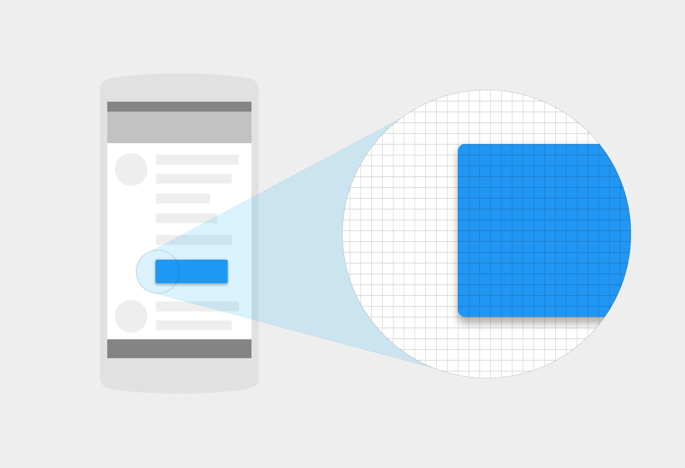

1인치에 꼭 들어맞는 픽셀의 수를 “픽셀 밀도(Pixel Density)” 라고 말합니다. 고밀도의 화면은 저밀도의 것보다 인치 당 더 많은 픽셀을 가집니다. 결과적으로, 버튼과 같은 UI 요소는 저밀도의 화면에서 물리적으로 더 크게 보이며, 고밀도의 화면에서 더 작게 보입니다.
화면 해상도는 한 디스플레이 안에 있는 픽셀의 수를 나타냅니다.
화면 밀도 = 픽셀 단위 화면 너비 (또는 높이) / 인치 단위 화면 너비 (또는 높이)
연관된 자료


고밀도 화면

저밀도 화면